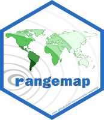

vignettes/rangemap_short_tutorial_II.Rmd
rangemap_short_tutorial_II.Rmd
If you haven’t seen the rangemap short tutorial I, take a look at it for more background on the rangemap R package.
In this short example we will explore three of the functions of this package that allow users to generate species ranges based on buffer distances, convex and concave hulls, and administrative areas.
The function rangemap_buffer generates a distributional range for a given species by buffering provided occurrences using a defined distance. See the function’s help for more details.
help(rangemap_buffer)
# getting the data
data("occ_p", package = "rangemap")
# Defining parameters
dist <- 100000 # buffer distance in meters
# Now we can create the species range based on buffers
buff_range <- rangemap_buffer(occurrences = occ_p, buffer_distance = dist)With the rangemap_boundaries function we can generate a distributional range for a given species by buffering provided occurrences using a defined distance. See the function’s help for more details.
# getting the data
data("occ_d", package = "rangemap")
# Defining parameters
level <- 0 # level of detail for administrative areas
adm <- "Ecuador" # Athough no record is on this country, we know it is in Ecuador
countries <- c("PER", "BRA", "COL", "VEN", "ECU", "GUF", "GUY", "SUR", "BOL")
# Now we can create the species range based on administrative areas using occurrence data
b_range <- rangemap_boundaries(occurrences = occ_d, adm_areas = adm,
country_code = countries, boundary_level = level)
# Now let's see the species range based on administrative areas using only names of areas
adm1 <- c("Brazil", "Ecuador", "Peru", "Bolivia", "Colombia", "Venezuela")
b_range1 <- rangemap_boundaries(adm_areas = adm1, country_code = countries,
boundary_level = level)The function rangemap_hull generates a distributional range for a given species based on provided occurrences and two distinct type of hulls, convex and concave. See the function’s help for more details.
# Defining parameters
dist <- 100000
hull <- "concave"
# Now we can create the species range based on administrative areas
hull_range <- rangemap_hull(occurrences = occ_d, hull_type = hull,
buffer_distance = dist)The function rangemap_plot will allow you to produce a nice figure for each of the species ranges. Lets put all the figures together and compare them.
par(mar = rep(0, 4)) # optional, reduces the margins of the figure
rangemap_plot(buff_range, add_occurrences = TRUE, northarrow = TRUE,
range_color = NA)
rangemap_plot(buff_range)
rangemap_plot(b_range)
rangemap_plot(hull_range, legend = TRUE, legend_position = "bottomleft")